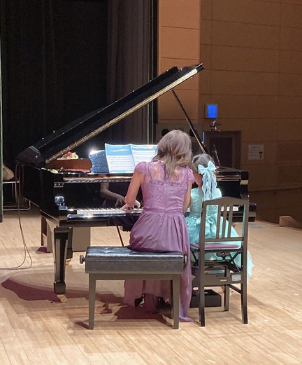
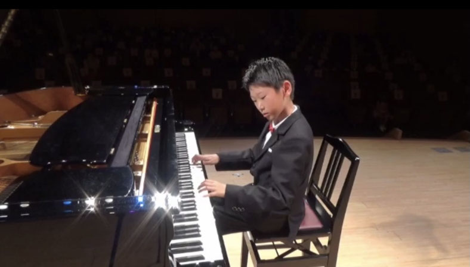
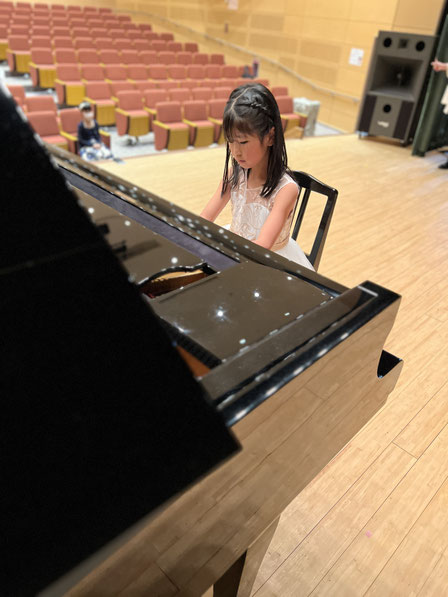
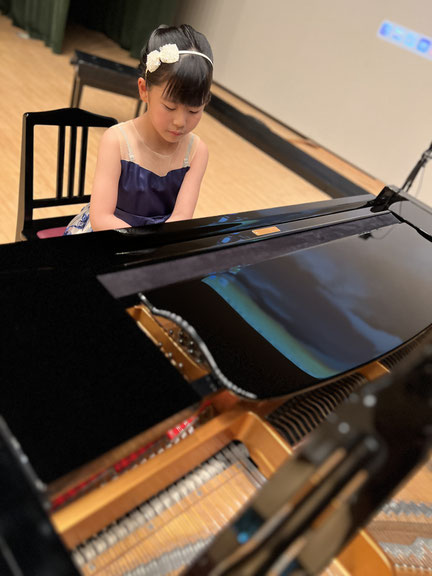
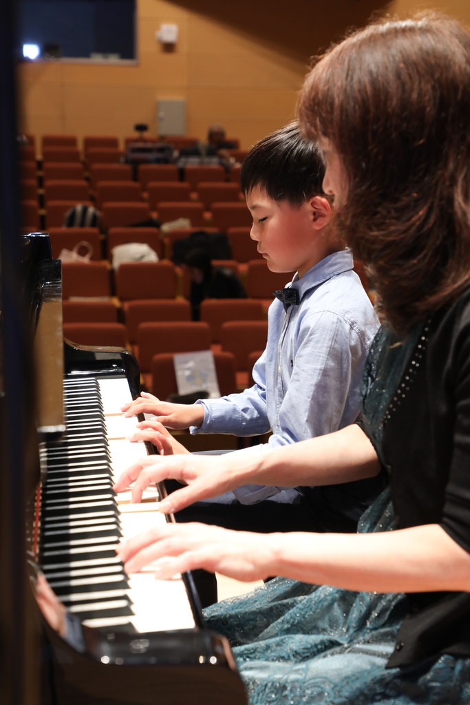

教室に通う生徒さん・保護者様から
嬉しいお声をいただいています。

別のピアノ教室で習っていましたが、進級を機にピアノ教室を探してみることにしました。その為何ヶ所か体験をしたのですが、尋木先生の体験レッスンでは先生の伝え方によってその場でいつも弾いていた曲の音の変化を感じ感激し、先生に習わせたい！と思いました。
家庭での練習も身体や指作りの体操や音読みやリズムなど様々なことが分かるようになるよう工夫されたものが様々で、習い始めて譜読みが出来るようになってきたり音の出し方を工夫して弾くようになってきました。
またレッスンを通して腕の使い方なども小さな子でも感覚的にわかるようにボールなど様々なものを利用しながら工夫して指導して頂けるのでとてもわかりやすいです。レッスンで習ったことを毎日少しずつ練習を重ねていけるよう、サポート出来たらいいなと思っています。まだまだこれからですが、今後の成長が楽しみです！

レッスンを始めて一年半ほどで引っ越しをすることになり、オンラインでレッスンを受けています。オンラインでも声掛けやカメラを上手く工夫したレッスンで、息子も飽きずに取り組めています。
ピアノを始める前は、できないとすぐに諦めることが多かったですが、ピアノを始めたことで、すぐにできなくても数日かけて粘り強く取り組むようになりました。
また、他の学校や違う年齢の生徒さんとも会う機会があるので、一緒に頑張っている友達や憧れるお兄さんやお姉さんもいて励みになっているようです。
いつも熱心で、技術的なことは、たくさんの言葉を使って丁寧に指導してくださいます。ピアノを通して息子の精神面のケアも一緒にして頂いていて、親の私にとっても頼もしい先生です。
今後も時には悩み、楽しみながら成長していく息子を見るのが楽しみです。

ピアノが好き、尋木先生が大好きな娘は教室に通う事が楽しみの一つです。
最近では、先生のようになりたい！と憧れ、練習を頑張る原動力になっているようです。
音楽の楽しさだけでなく、基礎力、技術力もしっかり教えてくださり、レッスンのたびに成長を感じています。

細やかで熱心なレッスンで、子どもの確かな成長を感じます！
慎重な性格の娘が『次はこの曲を弾きたい！』と積極的に挑戦する姿勢を見せるようになりました。
レッスン、発表会を通して、沢山の感動をもらっています。

最初からただ教えて弾くだけでなく、リズム感をつけることからはじめてくださったり、様々な道具を使って子どもが楽しんで出来るような工夫もしてくださってきちんと基礎力が身に付く！と思いました。
体験レッスンの1回で、今まで弾いていた曲が別の曲に感じるくらい変化して感動しました！
レッスン1回で先生の魅力が分かり人気なのが頷けます！
また、教室の発表会を「コンサート」と呼んでいるところなど、ちょっとしたことが子どもの自信に繋がるように工夫している教室だと思います。
レッスンや連絡のやり取りで、先生のお人柄があって愛される教室なのが良く分かりました。